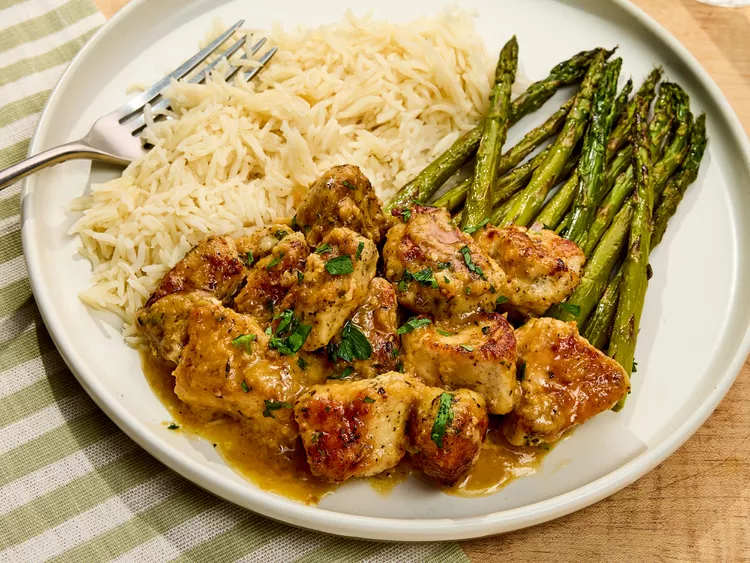

Garlic Butter Chicken

Description
Whether you're a college student cramming for your latest exam, or a busy
parent who can't seem to find enough hours in the day, this recipe is perfect
for you.
With few ingredients and a quick cook-time, this recipe is as tasty as it
is easy and is a great staple for any and all walks of life.
Ingredients
- 2 Tablespoons all-purpose flour
- 1 teaspoon kosher salt
- 1 teaspoon italian seasoning
- 1/4 teaspoon granulated garlic
- 1 pound bonless skinless chicken breast
- 2 tablespoons olive oil
- 1 tablespoon grated garlic
- 1/4 cup dry white wine
- 4 tablespoons unsalted butter, cubed
- 1/2 tablespoon fresh lemon juice
- chopped parsley
Steps
- Work seasonings and flour into chicken
- After 10 minutes, and a large skillet, cook chicken in oil
- Reduce heat to medium add garlic; cook stirring constantly
- Add butter and lemon juice to garlic mixture
- Add chicken once butter has melted
- Served on a bed of your favorite rice and vegetables